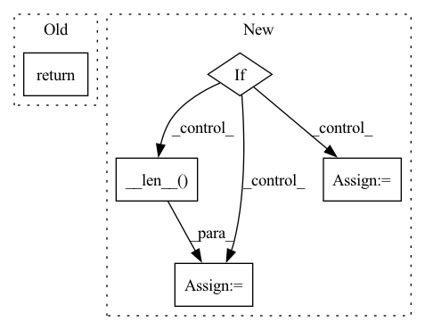

Pattern ID :38887
Before Change
in_tensor = super().forward(in_tensor)
if in_tensor.shape[1] != 1:
raise ValueError("Shape is wrong.")
return in_tensor.transpose(0, 1).view(-1, in_tensor.shape[-2], in_tensor.shape[-1])
class EasyZ(Preprocessing):After Change
:param x: input. tensor or tuple / list of tensors.
:return:
if isinstance(x, tuple) or isinstance(x, list):
out = [None] * x.__len__()
for i in range(x.__len__()):
out[i] = self.forward(x[i])
return out
in_tensor = super().forward(x)In pattern: SUPERPATTERN
Frequency: 3
Non-data size: 5
Instances Fragment ID: 110951672
Project Name: turagalab/decode
Commit Name: 9c596b2d7a1b1511f5ed9f99503e723912c68c26
Time: 2019-10-01
Author: gitdev@LRM.PHOTO
File Name: deepsmlm/neuralfitter/pre_processing.py
M Class Name: N2C
N Class Name: N2C
M Method Name: forward(2)
N Method Name: forward(2)
M Parent Class: Preprocessing
N Parent Class: Preprocessing
M File Name: deepsmlm/neuralfitter/pre_processing.py
N File Name: deepsmlm/neuralfitter/pre_processing.py
M Start Line: 51
M End Line: 54
N Start Line: 49
N End Line: 58
Before Change
sp_clip = self._load_clip(s_positive, self.positive_temporal_transform)
dp_clip = self._load_clip(d_positive, self.positive_temporal_transform)
return (a_clip, sp_clip, dp_clip), (a_target, sp_target, dp_target)
def _load_clip(self, data, temporal_transform):
path = data["video"]After Change
a_clip = self._load_clip(anchor, self.anchor_temporal_transform)
p_clip = self._load_clip(positive, self.positive_temporal_transform)
if self.negative_sampling:
while True:
negative_idx = np.random.randint(self.__len__() )
if negative_idx != index: break
negative = self.data[negative_idx]
n_target = negative[self.target_type]
n_clip = self._load_clip(negative, self.negative_temporal_transform)
return (a_clip, p_clip, n_clip), (a_target, p_target, n_target) Fragment ID: 110951670
Project Name: rvl-lab-utoronto/video_similarity_search
Commit Name: f902d74aed0fdc79b6f3b6710e1b82db83561384
Time: 2020-09-04
Author: sherrychen127@gmail.com
File Name: datasets/triplets_dataset.py
M Class Name: TripletsData
N Class Name: TripletsData
M Method Name: __getitem__(2)
N Method Name: __getitem__(2)
M Parent Class: data.Dataset
N Parent Class: data.Dataset
M File Name: datasets/triplets_dataset.py
N File Name: datasets/triplets_dataset.py
M Start Line: 70
M End Line: 86
N Start Line: 75
N End Line: 105
Before Change
video_format = splits[-1]
video_name = ".".join(splits[:-1])
timestamp = float(self.video_timestamps[i][index - self.offsets[i]])
return "%s-%.8fs-%s.png" % (video_name, timestamp, video_format)
After Change
// get frame number
frame_number = index - self.offsets[i]
if i < len(self.offsets) - 1:
n_frames = self.offsets[i+1] - self.offsets[i]
else:
n_frames = self.__len__() - self.offsets[i]
return f"{video_name}-{frame_number:0{len(str(n_frames))}}-{video_format}.png" Fragment ID: 110951671
Project Name: lightly-ai/lightly
Commit Name: ec38db5b5debf734feffa31359339245178600a6
Time: 2020-11-23
Author: philipp.m.wirth@gmail.com
File Name: lightly/data/_video.py
M Class Name: VideoDataset
N Class Name: VideoDataset
M Method Name: get_filename(2)
N Method Name: get_filename(2)
M Parent Class: datasets.VisionDataset
N Parent Class: datasets.VisionDataset
M File Name: lightly/data/_video.py
N File Name: lightly/data/_video.py
M Start Line: 243
M End Line: 246
N Start Line: 234
N End Line: 254